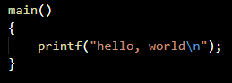

C est un langage généraliste de bas niveau. Il est très utilisé de nos jours. De nombreux langages plus modernes tels que C++, C#, Java, PHP, etc. ont repris sa syntaxe et en partie sa logique. C offre au développeur un contrôle important sur la machine et est donc très utilisé pour réaliser les compilateurs et interpréteurs d'autres langages.
Histoire
Le C a été inventé en 1972 par Dennis Ritchie et Ken Thompson dans les laboratoires Bell. Par la suite, Brian Kernighan aida à populariser le langage, mais fit également des modifications au dernier moment. En 1978, il écrit un livre décrivant le nouveau langage.
Caractéristiques
C est un langage généraliste et de bas niveau. Il propose un très grand nombre de types entiers et flottants qui s'adaptent aux données traitées par le processeur et utilise intensivement les calculs d'adresse mémoire. Le langage ne propose pas à la base de programmation orientée objet, ni de gestion d'exceptions comme on peut en trouver dans d'autres langages (exemple en Python : try/except). Ces caractéristiques en font un langage très utilisé pour les microprocesseurs, les calculs difficiles, le codage de systèmes d'exploitation et les programmes dans laquelle la vitesse est fondamentale. En contrepartie, l'écriture de programmes en C est plus difficile et longue qu'avec des langages de haut niveau. Le compilateur fait égalemet très peu de vérifications concernant les erreurs du programme.
Syntaxe
Voici un exemple de programme disant Bonjour :
Main est le nom de la fonction principale du programme, sans laquelle il ne peut s'exécuter. Les parenthèses indiquent qu'il s'agit d'une fonction. Les accolades entourant les instructions constituent le corps de la fonction, et sont obligatoires dès qu'il y a plus d'une instruction. Printf est une fonction d'écriture native. Les points-virgules sont obligatoires et marquent la fin d'une instruction. On peut écrire le même programme mais qui respecte les conventions :

#include <stdio.h> permet d'inclure l'entête stdio.h qui contient les fonctions natives d'entrée-sortie, telles que printf. Int est le type renvoyé par main. Void entre les deux parenthèses veut dire que la fonction n'admet aucun paramètre. Enfin, l'instruction return 0 fait retourner la valeur 0 à la fonction main.
Bibliothèque standard
La bibliothèque est très simple du fait du caractère bas-niveau du C. Elle n'offre aucun support d'interface graphique, de réseau, de gestion avancée d'erreurs internes au programme.